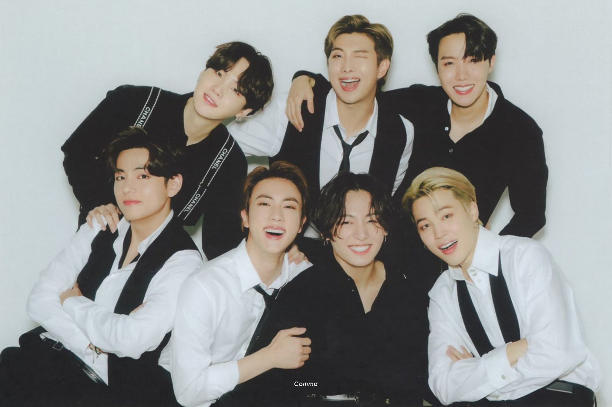

∴∵∴ ୨୧ ∴∵∴
— [♡] ;OUVIR KPOP
Pode ser que eu ouço kpop desde 2016, mas, uma coisa que eu entendi e descobri durante a pandemia,
é que acompanhar diferentes grupos de kpop, se envolver com uma cultura nova e apreciar o trabalho dos artistas coreanos
é um passa tempo muito bom para me desligar um pouco da realidade triste
em que estamos vivendo, agora a mais de um ano.
De 2016 até 2020, eu apenas acompanhei um grupo de kpop, o BTS, mas,
em maio, eu me interessei muito por outros grupos e agora já posso ser considerada 'multifandom'
que é quando uma pessoa faz parte de mais de 3 fandoms de kpop!
Realmente esse é um dos hobbies que eu pratico todos os dias, porque é o meu maior conforto.
Muitas pessoas não entendem, acham até idiota ou menosprezam os artistas de kpop, mas,
para muitas pessoas assim como pra mim, eles são a minha âncora e a minha motivação.
Os grupos de kpop que eu acompanho são:

⇾BTS
♫my fav♫
∴∵∴ ୨୧ ∴∵∴
⇾Enhypen
♫my fav♫
∴∵∴ ୨୧ ∴∵∴
⇾Monsta X
♫my fav♫
∴∵∴ ୨୧ ∴∵∴

⇾NCT (NCT U, NCT 127, NCT Dream e wavY)
♫my fav (NCT U)♫
♫my fav (NCT 127)♫
♫my fav (NCT DREAM)♫
♫my fav (WAVY)♫
∴∵∴ ୨୧ ∴∵∴
⇾Stray Kids
♫my fav♫
∴∵∴ ୨୧ ∴∵∴

⇾Wonho
♫my fav♫